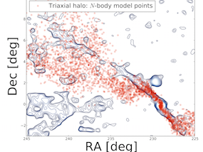

Sarah Pearson
Graduate Student, Columbia University
Welcome to my homepage! I am a third year graduate student in the Department of Astronomy at Columbia University.
Welcome to my homepage! I am a third year graduate student in the Department of Astronomy at Columbia University.
Here you can find a list of my refereed and submitted publications. You can also look me up on ADS, arXiv and google scholar.
I received my B.S. in Physics at the University of Copenhagen in 2012.
I'm currently a graduate student at Columbia University, where I am
pursuing a Ph.D. advised by
Kathryn V. Johston,
Mary Putman and Gurtina Besla.
I am interested in the shapes and nature of dark matter halos surrounding our own and external galaxies. I study these through a combination of observations and N-body simulations of tidal streams and dwarf galaxy interactions. I have previously done work on the morphology, explosive origin and and ionization state of supernova remnants.